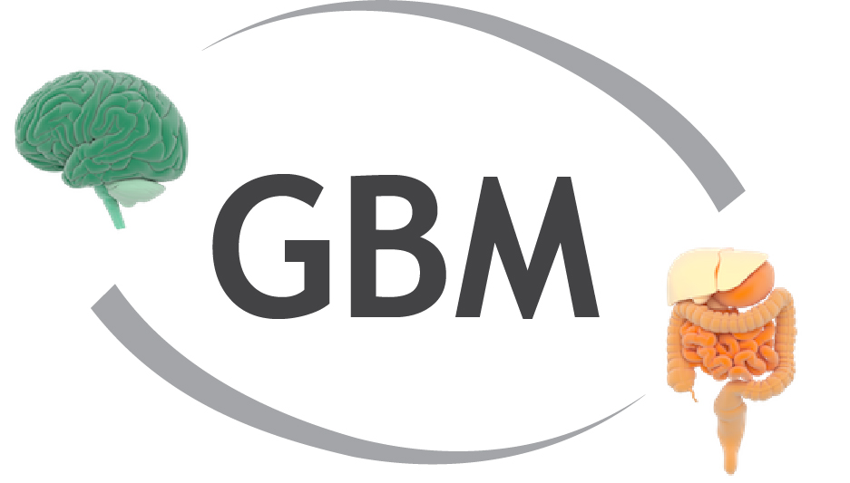

Companion website · Nature Microbiology 2019
The neuroactive potential of the human gut microbiota in quality of life and depression
Nature Microbiology 4(4):623–632 (2019) · doi:10.1038/s41564-018-0337-x
A database of manually curated gut-brain modules (GBMs), based on extensive literature review. Each GBM corresponds to a single neuroactive compound production or degradation process.

Files
Contents of GBMs.zip, also available as individual files.
| File | Description | Size | |
|---|---|---|---|
| GBMs/Supplementary.Data.S1.txt | Full GBM definitions: module id and name, input/output compounds, orthologue (KO/COG) sets per step and literature references. | 11 KB | Download |
| GBMs/GBM.inputfile.txt | GBM definitions reduced to module id, name and orthologue sets per step (module database input format, e.g. for omixer-rpm). | 5 KB | Download |
How to cite
If you use these data, please cite the original publication:
Valles-Colomer M, Falony G, Darzi Y, Tigchelaar EF, Wang J, Tito RY, Schiweck C, Kurilshikov A, Joossens M, Wijmenga C, Claes S, Van Oudenhove L, Zhernakova A, Vieira-Silva S, Raes J. The neuroactive potential of the human gut microbiota in quality of life and depression. Nature Microbiology 4(4):623–632 (2019). https://doi.org/10.1038/s41564-018-0337-x
@article{vallescolomer2019neuroactive,
title = {{The neuroactive potential of the human gut microbiota in quality of life and depression}},
author = {Valles-Colomer, M. and Falony, G. and Darzi, Y. and Tigchelaar, E. F. and Wang, J. and Tito, R. Y. and Schiweck, C. and Kurilshikov, A. and Joossens, M. and Wijmenga, C. and Claes, S. and Van Oudenhove, L. and Zhernakova, A. and Vieira-Silva, S. and Raes, J.},
journal = {Nature Microbiology},
year = {2019},
volume = {4},
number = {4},
pages = {623--632},
doi = {10.1038/s41564-018-0337-x}
}